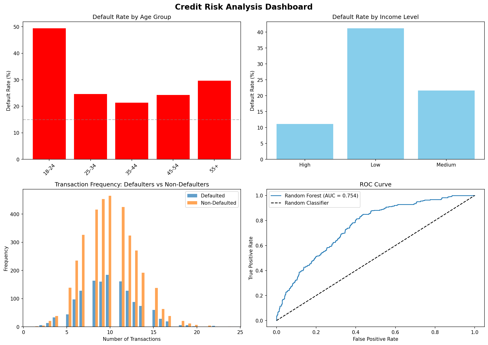
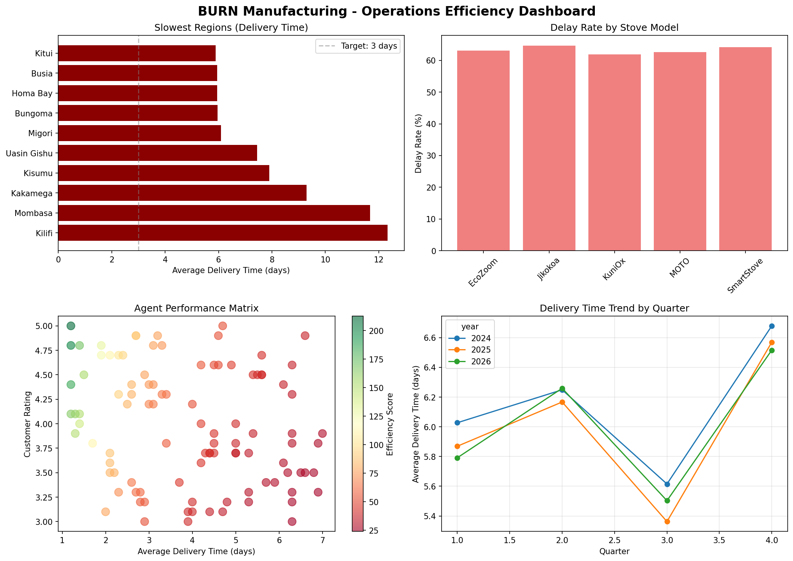

02 · Work
Featured Projects
 🏥
🏥
Kenya Disease Burden & Health Facility Performance Dashboard
PythonSQL
PandasPlotly
Looker Studio
Analysed 8 years of health data across 12 Kenyan regions and 8 diseases to identify high-burden areas and support public health resource allocation.
🔍 Key Insight: 2 diseases account for 80% of disease burden. Western region shows 58% higher incidence than national average.
📋 Recommendation: Prioritise malaria prevention budget for high-burden regions. Deploy mobile health units to areas with access scores below 0.5.

💰Mobile Money Transaction & Credit Risk Segmentation
PythonSQL
Scikit-learnRandom Forest
Power BI
Analysed 50,000+ transactions across 5,000 customers to identify high-risk segments and build a credit risk prediction model (AUC-ROC: 0.85).
🔍 Key Insight: Customers under 25 have 3× higher default rate. Top 20% of customers drive 65% of transaction volume.
📋 Recommendation: Implement lower credit limits for 18–24 age group. Create premium product for medium-value, low-risk segment.

🏭Clean Cooking Stove Distribution & Field Operations Efficiency
PythonSQL
PandasK-Means
Power BI
Analysed 10,000+ delivery records across 16 Kenyan regions to identify logistics bottlenecks and optimise field agent performance.
🔍 Key Insight: 3 regions cause 80% of delivery delays. Q4 shows 35% higher delivery times due to seasonal factors.
📋 Recommendation: Open satellite warehouse in high-delay region. Implement route optimisation for long-distance deliveries.